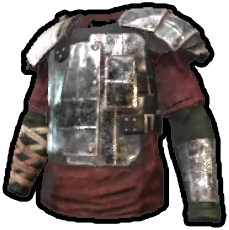

Armures
Objets · ArmuresPlastron en métal
Metal Chestplate

Metal Chestplate / ArmuresDéfenseAttributs en jeuAttributs de défense
Recette de fabrication
Recette de fabricationChaque fabrication produit 1 objets. Les matériaux ci-dessous correspondent à une fabrication.
 Métal de haute qualitéHigh Quality Metal
×10→
Métal de haute qualitéHigh Quality Metal
×10→
 Kit de coutureSewing Kit
×4→
Kit de coutureSewing Kit
×4→
 CordeRope
×3→
CordeRope
×3→
 TôleSheet Metal
×4→
TôleSheet Metal
×4→Comment l’obtenir
Comment l’obtenirButinS’obtient dans le butin
Récompenses / BoutiqueS’obtient en récompense ou en boutique
Produits du recyclage
Produits du recyclage

Attributs de défense
Attributs de défenseProjectiles45%
Corps à corps70%
Froid70%
Description de l’objet
Équipez-vous de ce plastron pour être moins endommagé pendant les attaques.